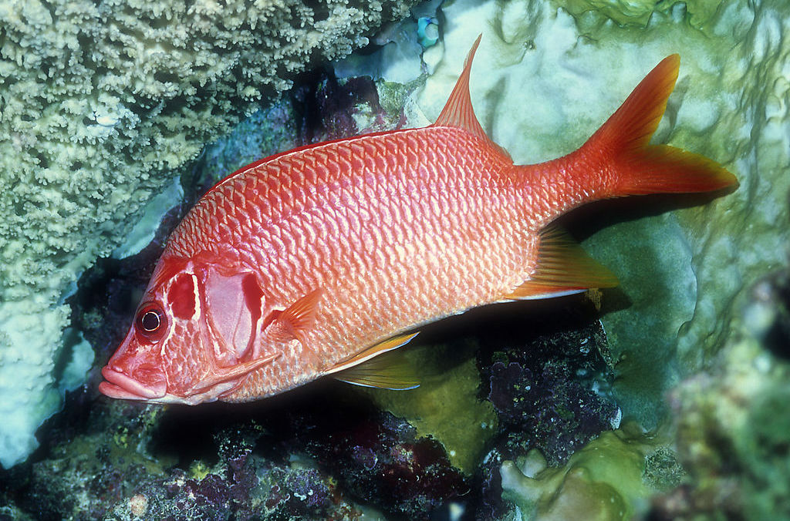
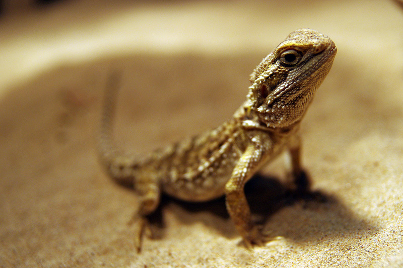

动物类别
-

鱼类
特征：水栖动物（生活于水中）。皮肤有鳞片覆盖，属变温动物。具有鳍（可以水中游动），用鳃呼吸的变温动物。体外受精，主要为卵生，部分为胎生及卵胎生。
鱼类，是最古老的脊椎动物。部分不同染色体数目的杂交的后代依然有生育能力。它们几乎栖居于地球上所有的水生环境，从淡水的湖泊、河流到咸水的大海和大洋。鱼类分为两个总纲：无颌总纲及有颌总纲，无颌总纲包括圆口纲、甲胄鱼纲，有颌总纲包括盾皮鱼纲、软骨鱼纲、辐鳍鱼纲，大多数鱼类是终年生活在水中，...
-

爬行类
特征：陆生动物，皮肤有鳞片或盾片覆盖.，一般具有防水外皮，水份散失.。属变温动物（靠外界的温度或热源来改变其体温)。主要分布在地球较温暖的地区。
体内受精，卵生或卵胎生.在陆地产卵，卵有防水外壳包裹。
爬行类( Reptilia)由石炭纪末期的古代两栖类进化而来，心脏有两心房一心室，心室有不完全隔膜，体温不恒定，是真正适应陆栖生活的变温脊椎动物，并由此产生出恒温的鸟类和哺乳类...
-
鸟类
特征：全身披有羽毛，身体呈流线型，有角质的喙；眼在头的两侧，颈部长而灵活可270度转；前肢特化成翼，后肢有鳞状外皮，具四趾；恒温动物（能通过自身的生理过程产生热量，即使外界温度很低，他们也能维持高而恒定的体温），平均体温比哺乳动物高出10度左右（平均42度）。
主要特征:⑴体表被羽毛，有翼，能飞翔。皮肤薄而软，便于肌肉的剧烈运动。⑵新陈代谢旺盛，体温恒定。高而恒定的体温，促进体内新陈代谢的速度。恒温减少了动物对外界温度条件的依赖性...
-
哺乳类
哺乳动物（包括化石和现生种类）可分为原兽亚纲、后兽亚纲和真兽亚纲。原兽亚纲包括已绝灭的中生代哺乳动物和现在的单孔目。单孔目中有针鼹和鸭嘴兽，产于澳大利亚、塔斯马尼亚和新几内亚，现存只有1目2科3属3种。哺乳纲除原兽亚纲、真兽亚纲外，还有后兽亚纲，包括各种有袋类，产于南、北美洲、澳大利亚及其邻近岛屿，共7目19科86属约250种；真兽亚纲，包括各种有胎盘类，广布世界各地。
按照世界哺乳动物物种（Mammal Species of the World）一书在2005年的资料，哺乳纲目前有约5676个...